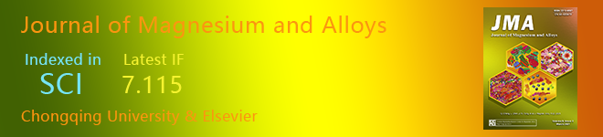

|

Guide for Authors
| Submit Your Articles
| Create E-alerts
| Welcome Fusheng Pan, New Editor in Chief |
|
It is our pleasure to announce that Prof. Fusheng Pan has joined Journal of Magnesium and Alloys as Editor in Chief. Pan Fusheng, born in 1962, a native of Lanxi, Zhejiang, a doctor and professor, a doctoral supervisor; the responsible person of material science of Chongqing University, a national key discipline, and responsible person of “Light Metal” Innovation Team under the Ministry of Education; president of the Chongqing University Light Metal Research Institute; director of National Magnesium Alloy Engineering Technology Research Center; president of Chongqing Academy of Science and Technology; and vice chairman of Chongqing Association for Science and Technology.
|
 |
Fusheng Pan
Professor,
Material Science,
Chongqing University,
China
Research Interests:
- magnesium alloy
- aluminium alloy
- chisel tool steel
- metallurgy and cast rolling technology
- metallurgical melt purification technology
|
| Related Research Articles |
 |
Lingjie Li, Xia Li, Jinlong Chen, Lei Liu, ... Fusheng Pan
Volume 9, Issue 2, 15 March 2021, Pages 668-675 View: PDF | DOI |
 |
Qiannan Zhao, Ronghua Wang, Yuxin Zhang, Guangsheng Huang, ... Fusheng Pan
Volume 9, Issue 1, 15 January 2021, Pages 78-89 View: PDF | DOI |
 |
Dajian Li, Yuan Yuan, Jiawei Liu, Maximilian Fichtner, Fusheng Pan
Volume 8, Issue 4, December 2020, Pages 963-979 View: PDF | DOI |
|
 |
The Journal of Magnesium and Alloys provides an international medium for the publication of theoretical and experimental studies in magnesium science and engineering. Appropriate submissions to the Journal of Magnesium and Alloys include studies that investigate scientific and/or engineering factors that affect the metallurgy, processing, microstructure, properties, and applications of magnesium and alloys and reports that contribute to the body of knowledge by documenting the thinking, philosophy, and strategies of magnesium science and engineering. |
If you do not want to receive this kind of email, please CLICK HERE to cancel the subscription. |